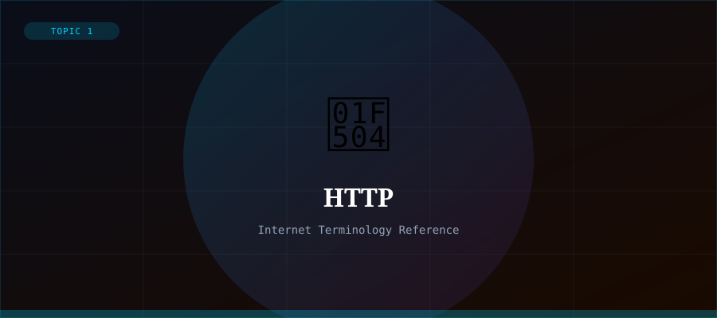

What is HTTP?
HTTP (Hypertext Transfer Protocol) is the application-layer protocol used for transmitting data on the World Wide Web. It defines how messages are formatted and transmitted between web browsers (clients) and web servers, and what actions servers should take in response to various types of requests.
HTTP was developed by Tim Berners-Lee alongside HTML and URLs as the three core pillars of the Web. The current version, HTTP/3, uses QUIC (a UDP-based transport) for faster, more reliable communication.
HTTP Methods
HTTP defines several request methods (also called verbs) that indicate the desired action on a resource.
- GET — retrieve a resource (most common — loading a web page)
- POST — send data to a server (e.g., submitting a form)
- PUT — update an existing resource
- DELETE — remove a resource
- HEAD — like GET but returns only headers, no body
- OPTIONS — describes communication options for the target
HTTP vs HTTPS
HTTPS (HTTP Secure) is the encrypted version of HTTP. It uses TLS (Transport Layer Security) to encrypt the communication, ensuring confidentiality, integrity, and authentication. All modern websites should use HTTPS to protect users' data.
You can tell a site uses HTTPS by looking for the padlock icon in your browser's address bar and the URL beginning with https://.
HTTP Evolution
- HTTP/0.9 (1991) — simple GET requests only
- HTTP/1.0 (1996) — headers, multiple content types
- HTTP/1.1 (1997) — persistent connections, chunked transfer
- HTTP/2 (2015) — multiplexing, header compression, server push
- HTTP/3 (2022) — built on QUIC for lower latency